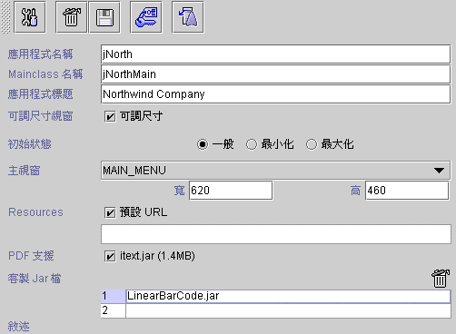

|

8.3 製作 Java Web Start 執行程式 (Java Web start JNLP)
JNLP 屬性設定 (JNLP properties)
建立執行程式 (build program)
Java Web Start™ 的應用程式是由 JNLP (Java Network Launching Protocol)
檔所啟動執行，使用者第一次執行程式時，可以在瀏覽器網址列輸入 JNLP 所在的位置 (URL) ，JRE 啟動後即會呼叫 Java Web Start™
並啟動程式，使用者可以經由 Java Web Start™ 的提示將系統配置於桌面或開始的目錄選單，下次執行即可由桌面捷徑圖示或選單直接執行。 Java Web
Start™ 應用程式管理者介面 (如下圖)，除了可以啟動執行應用程式外亦可管理所有 Java Web Start™ 的應用程式。
Java Web Start™ 應用程式與單獨執行 (standalone) 的 Java™ JAR，除了以下各點外幾乎完全相同。一、Java
Web Start™ 由 JNLP 啟動；單獨執行的 Java™ JAR 由 JAR 啟動。二、Java Web Start™ 應用程式受 Java
Sandbox 的 安全機制控管；單獨執行的 Java™ JAR 完全不受控制。三、Java Web Start™ 應用程式會經由 Java Web
Start™ 自動更新最新版本；單獨執行的 Java™ JAR 必須使用者自行更新。
Java Web Start™ 應用程式的版本更新是依據執行的 JAR 檔，jLIVE
Builder™ 在製作獨立執行應用程式時，提供
Standalone jlive.jar 及 Standalone customer jar
的選項，如果應用程式更版時
Java Web Start™ 可以只針對應用程式 JAR 檔下載更新，不須再耗時下載並未更動的其他客製 JAR 檔。Standalone jlive.jar
及其他客製 JAR 檔須設定其含於 jar href 中。
製作 Java Web Start™ 應用程式與製作獨立執行程式 JAR 的程序一樣，但是須製作 JNLP 檔，佈建時將 JNLP 檔與獨立執行程式 JAR
安置在同一個位置即可。

-
建立 (build
program )
 (
建立執行程式 ) ：建立一個 Java™ JAR 檔ile。
(
建立執行程式 ) ：建立一個 Java™ JAR 檔ile。
-
儲存
(save modified settings)
( 儲存修訂設定 )：所有更新必須存檔。
-
刪除 (delete)
 (刪除)：刪除此模組。 (刪除)：刪除此模組。
-
安全
(security control)
 ( 安全控管 ) ：jLIVE Builder™ 系統預設的安全登入機制。
( 安全控管 ) ：jLIVE Builder™ 系統預設的安全登入機制。
-
JNLP ：JNLP 檔屬性設定
。 ：JNLP 檔屬性設定
。
-
應用程式名稱 (app name)：Java Jar 檔名稱。
-
MainClass 名稱
(mainclass name)：jLIVE
Builder™
自動產生的 Java main() 的 class 檔名。
-
應用程式標頭
(application title)：主視窗的標題。
-
可調尺寸視窗
(resizable frame)：主視窗是否可由使用者調整大小。
-
初始狀態 (initial
state)：主視窗初始時的大小狀態。
-
一般 (normal)：照主視窗的原始設定大小。
-
最小 (iconified)：縮成 Icon 。
-
最大化 (maximize)：全螢幕大小。
-
主視窗 (main
panel)：應用程式執行的第一個視窗畫面
。
-
資源 (resources)：應用程式執行時，資源的
URL codebase。核選 預設 URL ，則其值為 JRE 所記錄的
user.dir 。
-
PDF 支援 (PDF
supported)：jLIVE
Builder™
以 iText 輸出 PDF 檔 ，由於 iText.jar 檔案大小為 1.45 MB，製作 (build) 應用程式時式時，系統會將 iText.jar
壓入 (jar) 應用程式 JAR 檔，讓使用者可以以單一 可執行 (executable) JAR 啟動程式，但相對也使可執行 (executable)
JAR 檔案加大，如果使用者希望以多個 JAR 檔參照執行，或使用 web start jnlp 時，請參照 建立執行程式 (build program)
的 Standalone jLIVE 及 customer jar。預設不支援 PDF，使用者在報表預覽的 PDF
功能鍵將會是失效狀態 (disabled)，設計師以 Report2Pdf() 啟動 PDF 的運算式將回傳 0 。核選 (check) 支援 PDF，製作
(build) 應用程式時，系統將會將 iText.jar 壓入 (jar) 應用程式 JAR 檔。
-
客製 Jar 檔 (custom
jar file )：jLIVE
Builder™
允許設計者呼叫外部 class，或自行開發的模組
(third
party class)，必須在此填入所參照的 class
檔。
-
敘述 (description)：設計者對於應用程式相關說明。
▲Top
JNLP 屬性設定 (JNLP properties)
按下系統開啟
JNLP 設定作業。第一次設定時 Make jnlp
鍵不會出現，必須先完成製作應用程式並以建立應用程式的選項，製作
JNLP。再次進入 JNLP 設定作業時 Make jnlp
鍵即會出現，設計師可以隨時修改及產生 JNLP。設定作業中，藍底編輯區為必要欄位不可空白。
jnlp
spec：預設值為 1.0+，此版本必須大於 1.0
。
codebase：在 JNLP 中所設定的 href
屬性皆以此為來源基準 (base)。
jnlp href：指向此 JNLP 的 URL。
information
title：應用程式名稱。
vendor：開發廠商名稱。
homepage href：關於應用程式的相關網站
URL。
description：應用程式描述。
desc kind：應用程式描述及適用時機。
- one-line：If
a reference to the application is going to appear on one row in a list or a
table。
- short
：If a reference to the application is going to be displayed in a
situation where there is room for a paragraph。
- tooltip
：If a reference to the application is going to appear in a tooltip。
icon：捷徑圖示及應用程式圖示。
splash：程式啟動時的 splash 圖片檔。
offline：應用程式允許在不連線狀態下也能執行。
security
resource
resource：指定程式資源的 os 及 arch。
jar href：應用程式所使用的 JAR
檔及下載方式。使用多個 JAR 檔時請以 ; 分隔。例如：以 standalone jlive.jar 及 standalone customer jar
並且使用客製( 3th party ) Jar LinearBarCode.jar 時，請輸入
jNorth.jar;jlive.jar;itext.jar;LinearBarCode.jar。
nativelib href：應用程式所使用的
native lib 檔及下載方式。
j2se：Java J2SE 的版本及初始化時
heap 的大小。
j2se href：如果使用者端的 J2SE™
版本不合時，由此 URL 進行安裝 J2SE™。
properties：應用程式啟動後，可以由
Java™ System.getPropperties() 取用的參數與值。
application
▲Top
建立執行程式 (build program)

-
編譯視窗
(Java --> class) ：只編譯
(compile) 更新的 Java™ source file ( *.java
日期晚於 *.class 的檔案)。
-
重編譯全部視窗
(Java --> class) ：重新編譯
(compile) 所有的 Java™ source file。
-
建立視窗
(XML --> Java --> class) ：由視窗的
XML 檔建立 Java™ source file (*.java)
， 再將其編譯 (compile) 為 Java class (*.class)，只建立更新的
XML 檔 ( *.xml 日期晚於 *.java
的檔案)。
-
重新建立全部視窗
(XML --> Java --> class)：由視窗的
XML 檔建立所有 Java™ source file (*.java)
， 再將其編譯 (compile) 為 Java™ class (*.class)。
-
產生
Jar Main() 檔案 (generate main() file)：產生
Java™ 執行檔的主程式 main java source file。
-
編譯
Main() 檔案 (compile main() file)：編譯
(compile) Java™ 執行檔的主程式 main java source file。
-
製作可執行
Jar 檔案 (build executable jar file)：
將所有設計的視窗及報表的 class
檔，壓縮成一個可以單獨執行 (standalone) 的 Java™ jar
file。
-
產生預載圖片
(generate pre-load images)：將應用程式
class/preloadimage
目錄下的圖片檔壓縮成 jimage.jar
並將其置放於應用程式 class
目錄下。
-
Java web start jnlp：產生 Java Web Start™
的 JNLP 檔，必須設定 JNLP 檔的屬性值後才可選用此功能。
-
Debug message：供設計師除錯及檢視內部作業時程，核取
Debug message
在瀏覽器的 Java™ console 或以 Jar 啟動的 DOS
視窗，系統會輸出各項作業的時間及程序，設計師可以據以了解各項作業在與應用伺服器溝通所耗時間。程式開發完成時，務必移除 (uncheck) 此選項。
-
standalone
jlive .jar：製作
(build) 應用程式時式時，系統會將 jlive.jar 壓入 (jar) 應用程式 JAR 檔，讓使用者可以以單一 可執行
(executable) JAR 啟動程式，但相對也使可執行 (executable) JAR 檔案加大，如果核選 (check)
standalone jlive .jar
，系統會將 jlive.jar 置放於與應用程式 JAR 檔，相同的目錄下，並在應用程式 JAR 檔 的 MANIFEST.MF 中加入
classpath。應用程式執行時參照的各 jar 檔必須存在於相同目錄下。
-
standalone customer jar：製作
(build) 應用程式時式時，系統會將客製 Jar 檔 (包括 iText.jar) 壓入 (jar) 應用程式 JAR 檔，讓使用者可以以單一
可執行 (executable) JAR 啟動程式，但相對也使可執行 (executable) JAR 檔案加大，如果核選 (check)
standalone customer jar
，系統會將 客製 Jar 檔置放於與應用程式 JAR 檔，相同的目錄下，並在應用程式 JAR 檔 的 MANIFEST.MF 中加入 classpath。應用程式執行時參照的各
jar 檔必須存在於相同目錄下。
▲Top
Copyright © 2001~
2004 Probe Technology . All Rights Reserved.
Questions, comments,
and suggestions to Service@probe.com.tw
|